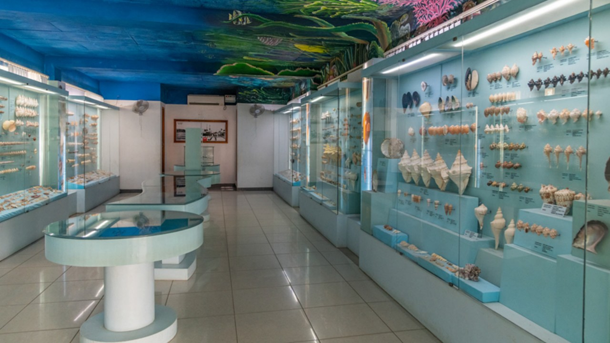

Musuem
Egmore Government Musuem

Gandhi Memorial Musuem
House of Kalam

India Seashell Musuem

Vivekananda House

About Us
Welcome to Tamilnadu Tales!
Your window to the soul of Tamilnadu's enchanting tourist places. Explore with us as we showcase the beauty, history, and charm of each destination, creating a visual feast for the travel enthusiast in you.